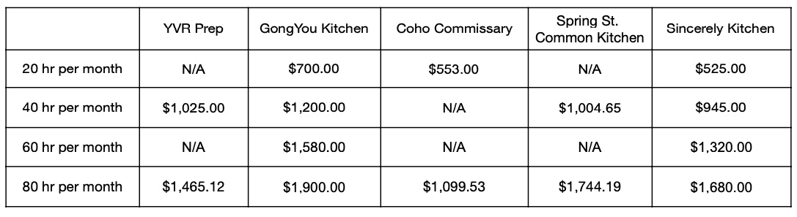

Choosing the right home for your business is an important decision.
Here is some info that hopefully helps.
Pricing
YVR Prep
5279 Still Creek Ave A5, Burnaby, BC V5C 5V1
Located in Burnaby, has been operating for more than 5 years. One of the larger kitchens in the area. Varied equipment is available. A bustling kitchen with lots of activity going on all the time. Great hustle vibe.
GongYou Kitchen
950 Seaborne Ave #1120, Port Coquitlam, BC V3B 0R9
Located in Port Coquitlam, including a Cafe storefront and Market featuring products made in the Kitchen. A medium-sized kitchen, equipped with varied equipment. Less hectic than some of the kitchens closer to the Vancouver core.
Coho Commissary
Multiple locations (Vancouver, Richmond, White Rock, Victoria, Gibsons)
The biggest operator of Shared Commercial Kitchens in the region. Multiple locations and types of kitchens, with different types of equipment in each location. Lots of choices. White Rock, one of the newest locations, features a community-run Restaurant.
Spring Kitchen
2810B Spring Street, Port Moody, BC
A newer kitchen, located in Port Moody. Plans of a community-run storefront cafe are exciting.
